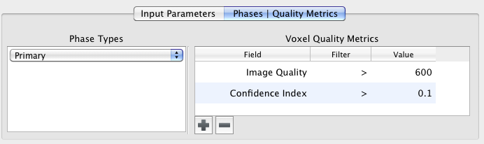

Reconstruction

- EBSD HDF5 File - This is the name and location of the .h5ebsd file you wish to reconstruct
- a. The minimum and maximum slice numbers will be automatically displayed with the z resolution or spacing.
- Start Slice and End Slice - This defines the range of sections you wish to reconstruct. The user can choose to only import a subset of the entire dataset, you can choose to not reconstruct everything you imported.
- Options - These are all the options that can be set to control the reconstruction
- Merge Twins - This is an option that will indentify neighboring grains that have a twin relationship (3,5,9) and merge them together. Effectively, this is a second burn algorithm (performed on the identified grains, rather than the individual voxels) using the specific twin misorientations as a joining criterion rather than the misorientation tolerance used for forming the grains.
- Merge Colonies - This is an option that is similar to the Merge Twins option, but will reconstruct prior beta grains in an alpha-beta titanium microstructure. It will first identify grains (which would be alpha colonies in a transformed beta microstructure) and then perform a burn algorithm on neighboring grains/colonies, using the specific misorientations between alpha variants from the same beta grain as the joining criterion.
- Rectangularized Sample - This option will fix the sample to look like a perfect rectangular sample by determining the smallest rectangular box that fits around the reconstructed volume and coarsening the structure to fill in the empty space within the rectangular box. Note that the box is created with axes along x, y and z. This option is generally not used unless the reconstruction needs to be used in a program that cannot handle having empty space outside of the sample (i.e. possibly a Finite Element simulation).
- Alignment Method - This allows the user to choose the method used to align neighboring sections. Outer Boundary simply tries to align the area identified as sample on each section. Minimum Disorientation moves the sections until there is a minimum value of disorientation between all voxels in one section and the voxel directly above it in the next section. Mutual information segments each section independently and then performs a mutual information analysis on the grain ids.
- Data Orientation - This defines the origin of the EBSD Data file. Note that TSL and HKL define different locations on an EBSD scan as the origin. Additionally, the origin may be defined differently for the Euler angles and the morphological features. This setting allows the user to define what location in the 2D EBSD map they want to be the origin for both the Euler angles and morphological features. The Euler angles and x/y coordinates of the scan are all consistently modified by the code during reconstruction and not changed in the .h5ang file (which means the origin needs to be set every time the dataset is reconstructed.
- Min Grain Size - This a clean-up filter that can be set to merge grains below a defined size after grains have been formed. The voxels of the removed grains are reset to unassigned and then the region is filled in by a local grain growth algorithm.
- Disorient. Tol. - This is the orientation difference tolerance allowed between neighboring voxels before they are declared to belong to different grains. Neighboring voxels with misorientations lower than the tolerance are joined during a burn algorithm.
- Down-sample Res. - This a factor used to down-sample the 3D volume if desired. If the value is set to 1, then nothing happens, but any other value will scale the resolution by that value. A new grid is created and laid over the original data grid. This option is usually only used if the dataset is too large to transfer into some other program(s) and needs to be coarsened.
- Bin Step Size - This is the step size used in correlating statistical descriptors to grain size. The value is set in microns, so for example, if the maximum grain size is 50 microns, a value of 5 would create 10 size bins in which grains would be segregated to create shape, no. of neighbors, etc. distributions as a function of grain size. This value should be selected by balancing each of the following: how quickly are other statistics likely to vary with size and how many grains are needed in each size bin to describe grains of that size. Creating size bins too small will result in not enough grains in a bin and creating size bins too large may miss identifying correlations.
- Phase Types - These are required descriptors to classify the ÔtypeÕ of phase each phase in the EBSD scan. These classifications are used when moving the data to the Synthetic Builder, but are not critical to the reconstruction itself only the statistics calculations.
- Quality Metric Filters These are filters that are applied to the input data that determines which voxels are "Good" and which voxels are "Bad". For a voxel to be considered a "Good" voxel every filter must evaluate to true.

- Load/Save Preset this allows the user to save input settings or load previously saved input settings
Output Directories and Files
Output Directory - location that all output files will be written to.
Output File Prefix - this option allows the user to define a prefix to place
on the output data files (which have a fixed basename). The full names of the files will
update in real-time on the list of output files.
- Voxel Data File - This file holds the voxel representation of the reconstructed
volume where the volume is an N x M x Z array of values where each value is a grain id value. This
file will automatically be written to disk.
- HDF5 Polydata File - This file holds a polydata representation of the voxel
volume where each voxel is described by a cube of 8 xyz positions and the line
segment connecting them. This file format can be viewed in ParaView if the appropriate
plugin is used.
- VTK Downsampled Voxels - This file holds a downsampled version of the
voxel file for those cases where the full voxel volume is too large to be visualized.
- Dx File Format - This file format output saves the grain ids to a
"dx" file format.
- Ph File Format - This file format output saves the grain ids to
a "Ph" file format.
- VTK Rectilinear Grid - This file is a Vtk legacy file that can
be optionally written as a binary (Faster loading and saving) or as ASCII (Slow reading and writing).
In addition to the grain ids several other voxel attributes can be written to the
legacy vtk file. Clicking the "VTK Options" button will show those options to the
user.
Quality Metric Notes
TSL Image Quality
This is a threshold value that is used to define the outer border of the sample and terminate grain formation during segmentation. Image Quality is a metric used by TSL to define the quality or perfection of the orientation pattern at a data point. Generally when serial sections are collected, there is some extra area collected around the sample and this data usually has ÔmuchÕ lower values of Image Quality. This tolerance thresholds the outer area and also ends the grain formation burn algorithm, because it is not desirable to begin formation of a grain with a very low value of pattern quality.
TSL Confidence Index
This is threshold used the same as Min. Image Quaity, but using another TSL data metric that defines the confidence in the orientation determined from the orientation pattern.